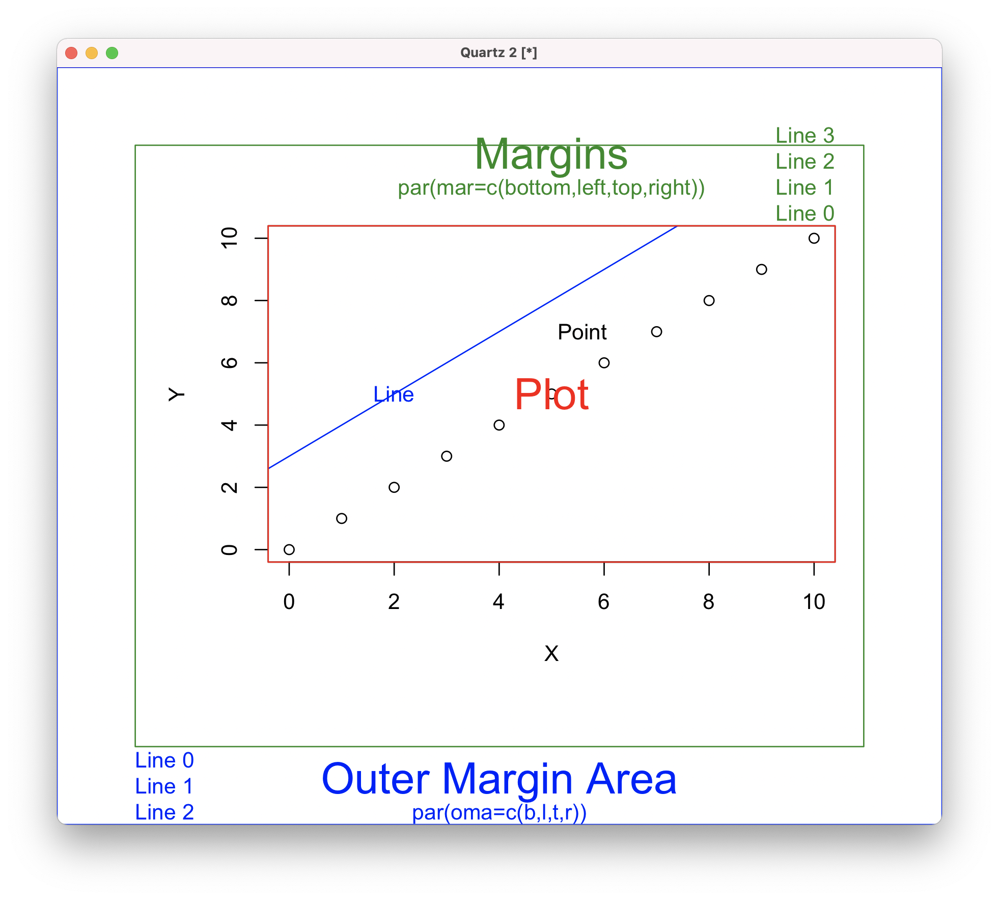
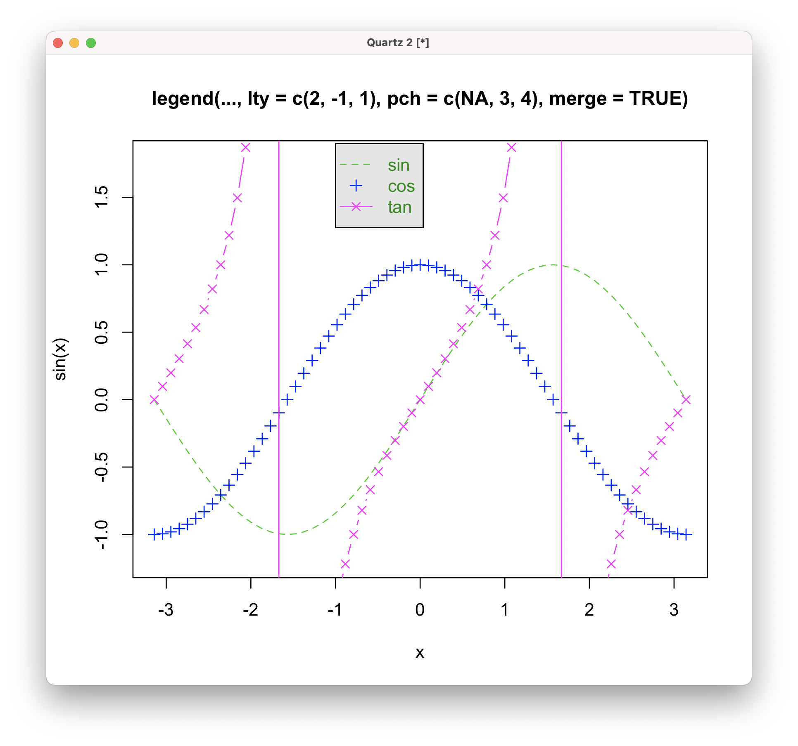
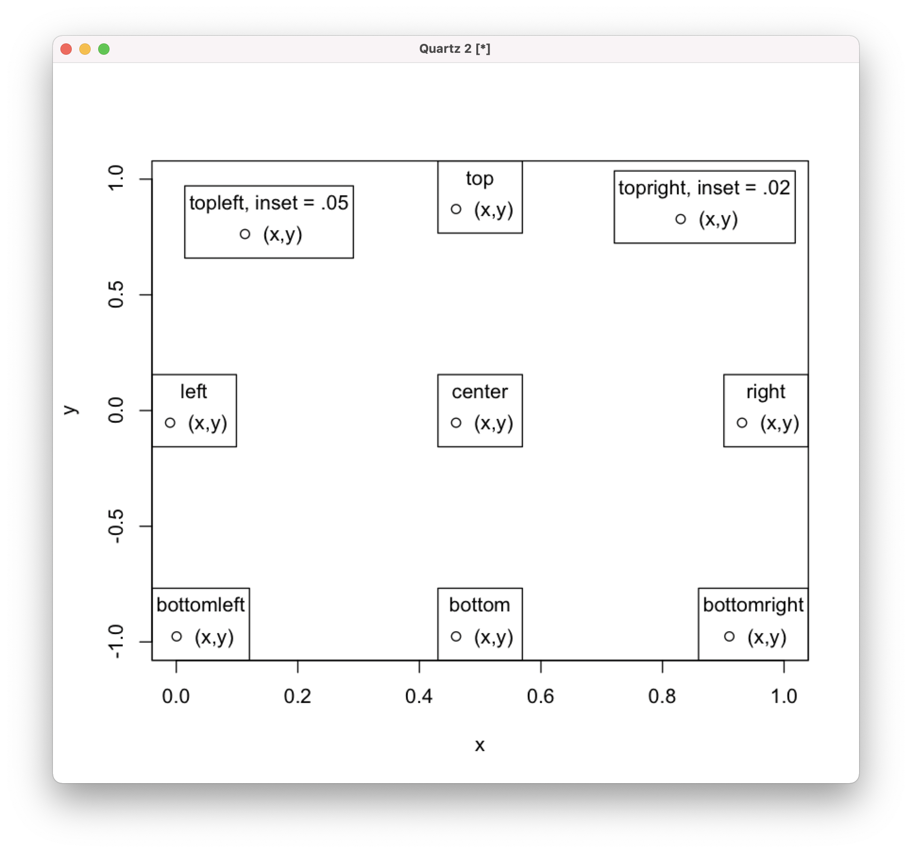
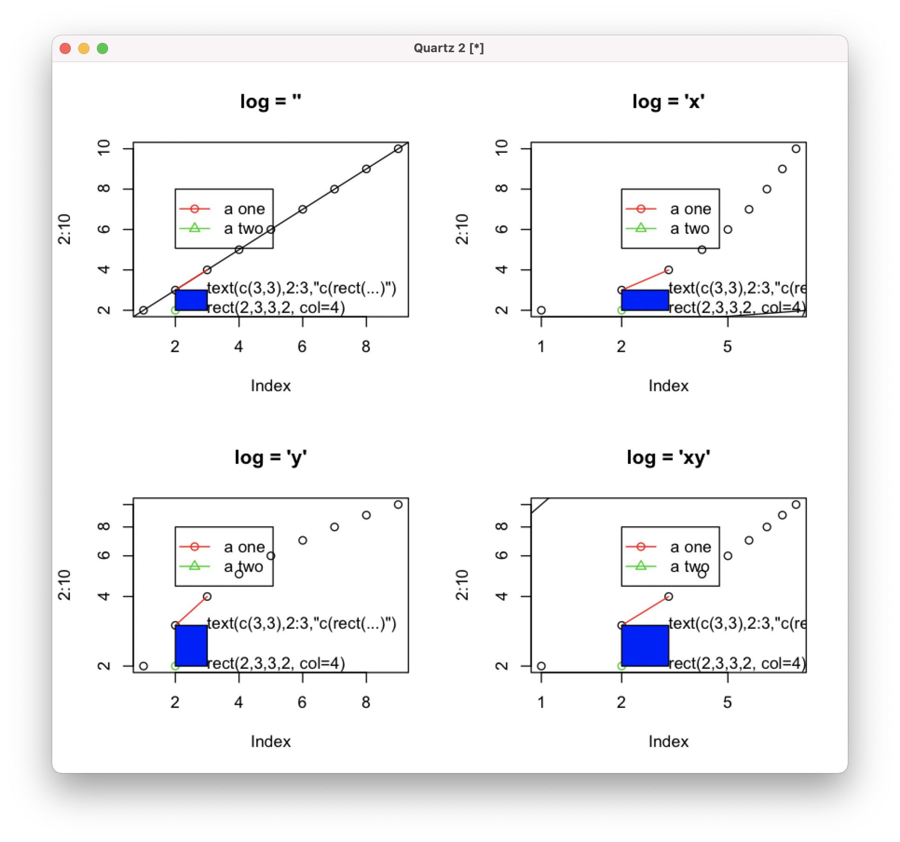
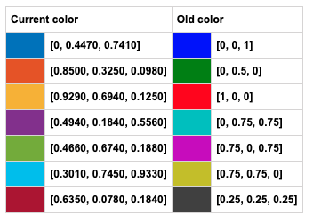

Statistical
Computing
Graphics
Xi (Rossi) LUO
Department of Biostatistics and Data Science
School of Public Health
The University of Texas Health Science Center at Houston
R Graphics
- Rich set of customizable options
- Default plots may look terrible
- Need some work to improve plots: design and color
plot()
- Generic function, actual function called depends on class
- Default plots should almost never be used for high profile publications
Basic Plot Components
Windows
- Linux,
X11() - Mac,
quartz() - Windows,
windows()
Multiple Lines/Points
-
plot() creates a new plotting box, except when sometimesadd=TRUE is allowed -
lines(), ablines(), points()... add more lines/points to the current box, without creating a new one
text()
- Used to add text to plot
- Together with
locator(1) to pinpoint locations anywhere and add text-
text(locator(1), 'your text')
-
Example
plot(0:10, 0:10, xlab="X", ylab="Y")
text(7, 7, adj=2, 'Point')
abline(c(3,1), col='blue')
text(2, 5, "Line", col='blue')
text(5,5, "Plot", col="red", cex=2)
box(col="red")
Good Practice
- Wrap codes for plotting in another file or function
- Edit the plot codes and modify as needed
- Load updates via
source - Iterate until satisfaction
Customize Text
-
cex to specify font size, usually > 1 to make fonts larger -
family to specify font, usually sans or Arial for most journals
Range of Axes
-
xlim,ylim to specify axis ranges for x and y -
The ranges determined by issing the first plot function, add-on plots (e.g.
lines ) may go out of ranges - Also important to set limits when multiple plots are put side-by-side
Other Functions
-
polygon for adding (filled or unfilled) polygons -
lowess for adding smoothing lines,loess a newer alternative with different options -
curve for plotting curve functions using a formula, instead of x and y values, which is similar toplot.function
Legend
Legend Location
Other locations, like in outer margins, available
Legend Scaling
More examples available on
Multiple Plots
Basic multi-plot layout (equal spaced) by
par(mfrow = c(2, 3))
plot(1:10, 1:10, main="1")
...
6 subfigures arranged by 2 rows and 3 columns. Each new plot object fills subfigures from left to right, top to bottom
Multi-row/col Layout
attach(mtcars)
layout(matrix(c(1,1,2,3), 2, 2, byrow = TRUE))
hist(disp)
hist(mpg)
hist(wt)
Fine Control
par(fig=c(0,0.8,0,0.8), new=TRUE)
plot(mtcars$wt, mtcars$mpg, xlab="Car Weight",
ylab="Miles Per Gallon")
par(fig=c(0,0.8,0.55,1), new=TRUE)
boxplot(mtcars$wt, horizontal=TRUE, axes=FALSE)
par(fig=c(0.65,1,0,0.8),new=TRUE)
boxplot(mtcars$mpg, axes=FALSE)
Color

R Colors
- Colors represented by HEX
- # followed by 6 symbols (0-9, A-F)
- Base-16 symbols in pairs, first pair for red value (0-255, 00-FF), second green, thir blue
- Two additionals (base-16) can be added for representing transprarency
- 657 built-in color names, e.g. red
- Can be converted to other color models
- RGB: red, green, blue values
- HSV: hue, saturation, value
- HCL: hue, chroma, luminance
Color Wheel

Top view of the HSV color cone, brightness value 255
HSV
- Hue: angular dimension, 0 degree red, 120 green, 240 blue, 360 red
- Saturation: purity of color
- Value: lightness
- Mixing colors:
- Tint: pure color + white
- Tone: pure color + gray
- Shade: pure color + black
Saturation
Default R colors (left) with full saturation may look too sharp
Matlab New vs Old Default Colors
Complementary Colors
Opposite sides of the color wheel, to contrast different categories

VS
Monochromatic Colors
Different shades,tones,tints of one color, for ordinal variables or comparing too many categories

Analogous Colors
Colors with close hue values, for ordinal variables or comparing too many categories

Triadic Colors
3 colors evenly spread on angles (hues), enough contrast but less than complementary

Tetradic Colors
4 colors evenly spread on angles (hues), enough contrast but less than complementary

Grayscale
Make sure colors converted to grayscale having enough contrast, for printing and colorblind friendly
R Color Pallets

> library(RColorBrewer)
> brewer.pal.info
maxcolors category colorblind
BrBG 11 div TRUE
PiYG 11 div TRUE
PRGn 11 div TRUE
PuOr 11 div TRUE
RdBu 11 div TRUE
RdGy 11 div FALSE
Graphic Devices
- R displays are organized as devices
- One plot can be shwon on different devices
- A device can be a file or screen (default)
> pdf("test.pdf")
Open a device, creating a pdf file this case, as the currect device
> dev.list()
X11 pdf
2 3
List devices, referred to by number
> dev.cur()
pdf
3
Showing current device, plots go to the pdf file
> dev.set(2)
X11
2
Set current device to screen
> dev.copy(which=3)
pdf
3
Copy plot from current (2) to which (3) device
> dev.set(3)
pdf
3
> dev.off()
X11
2
Close current device (3)
3D Graphics
-
lattice : basic pkg for 3D plots -
rgl : interactive 3D plots
References
- R for DS: ch 10
- https://www.statmethods.net/advgraphs/layout.html
- https://www.canva.com/colors/color-wheel/
- https://paletton.com